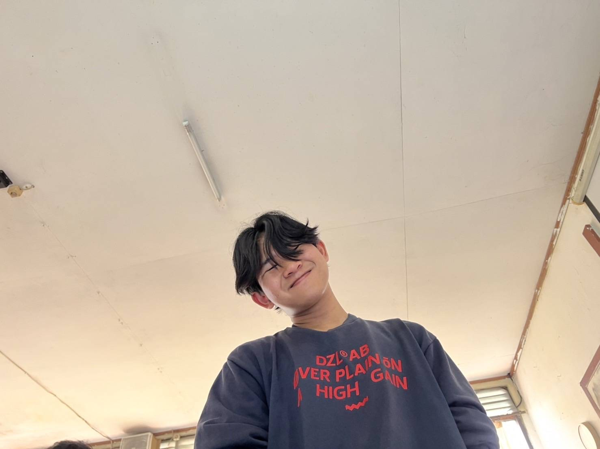

ABOUT ME
Giras Matahari - Front-End UI/UX Developer
Lulusan D3 Rekayasa Perangkat Lunak Aplikasi dan S1 Informatika dengan fokus pada UI/UX Design dan Front-End Development. Saya memiliki ketertarikan pada perancangan antarmuka yang interaktif dan pengalaman pengguna yang intuitif, sehingga menghasilkan aplikasi yang tidak hanya menarik secara visual tetapi juga mudah digunakan. Berpengalaman sebagai Metaverse Developer di Center of e-Learning and Open Education Telkom University serta intern di Divisi Teknologi Informasi PT LAPI ITB, dengan pengalaman berkontribusi dalam pengembangan berbagai solusi digital. Saya terbuka terhadap tantangan baru, mudah beradaptasi, mampu bekerja secara tim, dan berkomitmen menghasilkan solusi yang memberikan nilai nyata bagi pengguna.